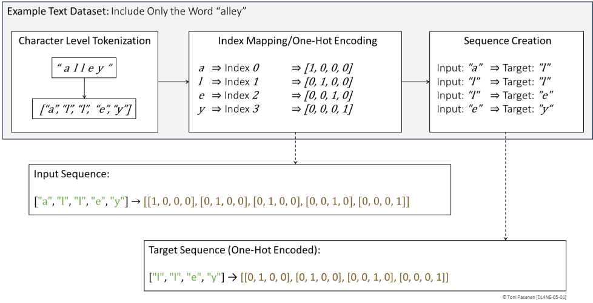
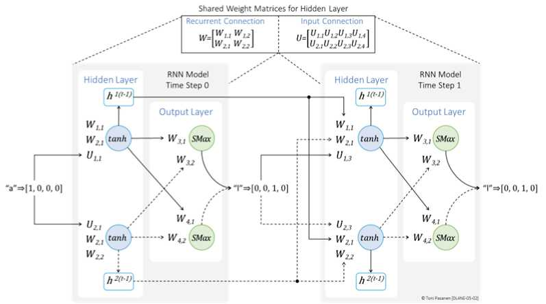

文字、语音、时序流量都是序列：当前词义依赖上文。FNN/CNN 只看当前输入，RNN 把上一时刻隐藏状态 h_{t-1} 与当前输入 x_t 一起喂给隐藏层，得到 h_t，再算输出。公式：h_t = tanh(W_h·h_{t-1} + W_x·x_t + b)。h 就是记忆载体。
W_x（输入→隐藏）、W_h（记忆→隐藏）、W_y（隐藏→输出）。关键是 W_h、W_x 在所有时间步共享——像同一套规则处理每个包，参数省、可处理变长序列。书 p113-116 以文本数据集演示加权求和与输出层。
t=2 时，h_1（t=1 的记忆）与 x_2 共同决定 h_2。如此滚动，理论上 h_t 包含全部历史。这正是 RNN 能做“根据上文预测下词”、网工能做“根据历史流量预测拥塞”的原因。


用流量预测举例：t时刻拥塞判断需要哪两个输入？对应 x_t 和 h_{t-1} 各是什么？